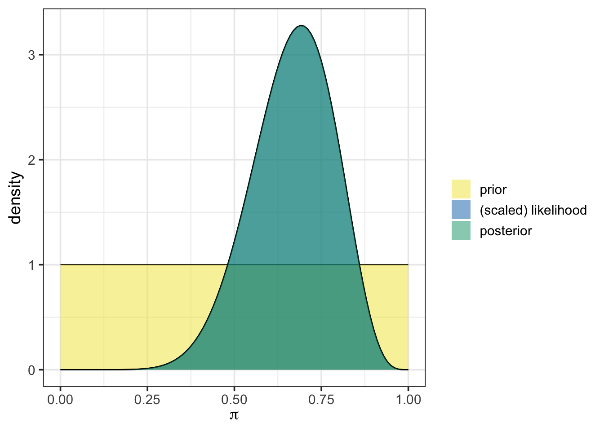
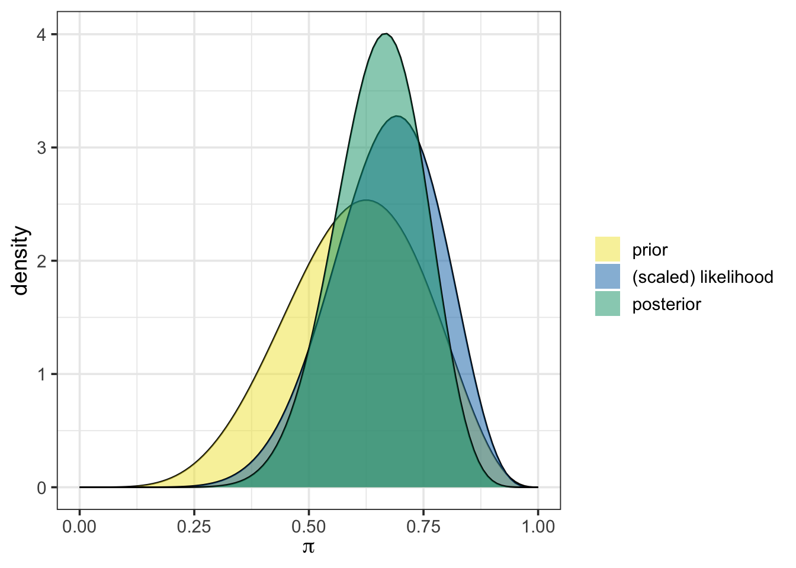
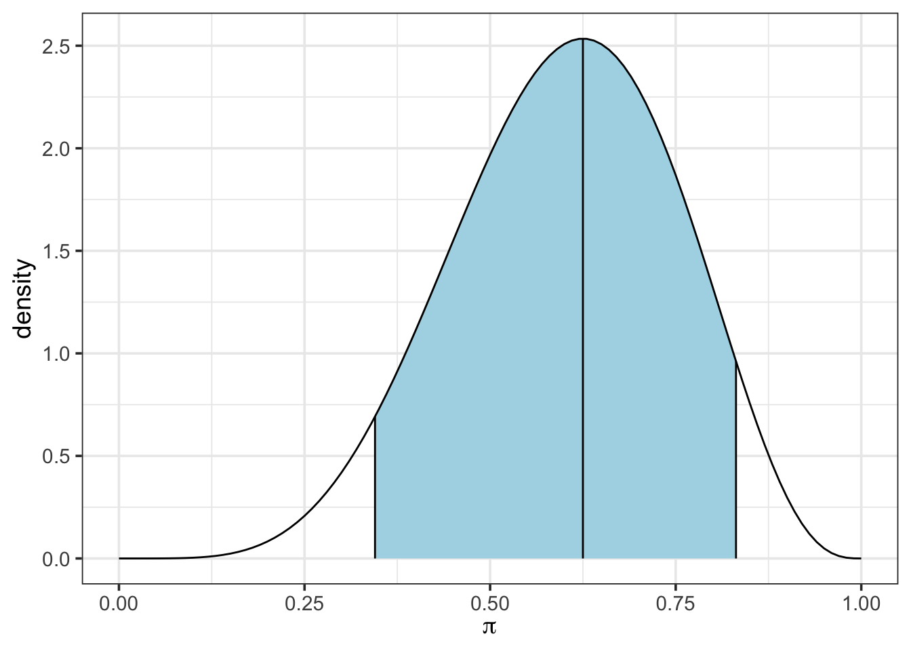

Bayesian Boundaries: Investigating Credible Intervals
(Biology; Chytrid Fungus in Frogs)
Sample Activity 1 (Biology Context)
This activity is a sample of our second activity (Bayesian Boundaries: Exploring Credible Intervals) with a biology context laid over the framework. This sample has been constructed with coauthor Dr. Katie Duryea, a member of the Biology faculty at Southern New Hampshire University. This sample activity provides an example of what versions of this activity from other domains/contexts may look like.
Goals and Objectives
Statistics Goals: The statistics-focused goals of this activity are as follows:
- Recall the concepts of prior and posterior distributions and use the
{bayesrules}package to easily update a prior with observed data, obtaining a posterior distribution. - Extract a credible interval from a posterior distribution
- Interpret a credible interval obtained from a posterior distribution
Course Objectives: This activity would map to course-level objectives similar to the following. Note that this is not an exhaustive list, nor should it be interpreted that objectives must be phrased identically. This is to give an idea as to the wide variety of contexts this activity might be placed in.
- Students will evaluate a research question using appropriate statistical techniques
- Students will correctly identify the type of data they are working with
- Students will learn about different statistical models and approaches
- Students will interpret coefficients from a statistical model
- Students will evaluate the underlying assumptions of a statistical approach
- Students will consider the ethical implications of statistical approaches
- Students will gather data using methodologies appropriate to the context
Biology Objectives:
- Students will examine the ecological impact of different pathogens, both native and introduced
- Students will evaluate literature and/or prior research to generate hypotheses for a research question
- Students will learn about how different statistical approaches can be applied to biological data, and how to compare approaches
- Students will consider how different statistical approaches can help scientists to learn more about an ecological concept or conservation concern
Background Information
The following sections provide the statistical and contextual background for this activity.
Data Analysis and Bayesian Thinking
There are many statistical tools which can be used to investigate population parameters. As we mentioned in our first activity, these tools fall into three broad categories:
- Classical/Frequentist methods
- Simulation-based methods
- Bayesian methods
This series of activities focuses on Bayesian methods. In this second activity, we engage in extracting and interpreting a credible interval from a posterior distribution. We’ll briefly review how to obtain the posterior distribution from the prior and observed data, but check back on our first activity for full details.
About Chytrid
As a reminder, Chytrid fungus is an infectious fungal disease that can be fatal to amphibians and has caused some species to become extinct. Check out this video from Chris Egnoto to learn more about this threat to amphibian life.
Purpose
Building on concepts from the first activity, we’ll continue to estimate the proportion of frogs in southern New Hampshire which are impacted by chytrid fungus by extracting and interpreting a credible interval from the posterior distribution.
Reminder About Prior and Posterior Distributions
In Bayesian inference, a prior distribution represents initial beliefs about a population parameter. This allows for prior knowledge or experiences (and uncertainties) to inform conclusions without solely relying on new data. The posterior distribution is then obtained by updating the prior with observed data by using a version of Bayes’ Rule:
\[\mathbb{P}\left[\text{parameter value} \mid \text{data}\right] = \frac{\mathbb{P}\left[\text{data} \mid \text{parameter value}\right]\cdot \mathbb{P}\left[\text{parameter value}\right]}{\mathbb{P}\left[\text{data}\right]}\]
In Activity 1, we manually updated the prior, applying this relationship step-by-step via code, which provided transparency into the Bayesian updating process.
We’ll start with a reminder of where our pre-reading left off before moving on to learn about convenient functionality, how that functionality can help us obtain credible intervals, and how we can interpret and draw insights from those intervals.
Purpose
Building on concepts from the first activity, we’ll continue to estimate the proportion of frogs in southern New Hampshire which are impacted by chytrid fungus by extracting and interpreting a credible interval from the posterior distribution.
Reminder About Prior and Posterior Distributions
In Bayesian inference, a prior distribution represents initial beliefs about a population parameter. This allows for prior knowledge or experiences (and uncertainties) to inform conclusions without solely relying on new data. The posterior distribution is then obtained by updating the prior with observed data by using a version of Bayes’ Rule:
\[\mathbb{P}\left[\text{parameter value} \mid \text{data}\right] = \frac{\mathbb{P}\left[\text{data} \mid \text{parameter value}\right]\cdot \mathbb{P}\left[\text{parameter value}\right]}{\mathbb{P}\left[\text{data}\right]}\]
In Activity 1, we manually updated the prior, applying this relationship step-by-step via code, which provided transparency into the Bayesian updating process.
Convenient Functionality from {bayesrules}
Temporary Workaround
We’re having trouble with {rstanarm} in webR and {rstanarm} is a dependency of the {bayesrules} package. Since none of the functions utilized in this activity require {rstanarm}, I’ve saved an R Script with the functions we are using. Run the code cell below to “source” that script.
In this activity, we’ll simplify the process of obtaining our posterior distributions by using functions from the {bayesrules} package. Bayes Rules! An Introduction to Bayesian Modeling, by Johnson, Ott, and Dogucu (Johnson, Ott, and Dogucu 2022) and the corresponding {bayesrules} R package (Dogucu, Johnson, and Ott 2021) provide user-friendly functionality that we’ll take advantage of.
In our first activity, we began with an uninformative prior, represented as a beta distribution with one observed success and one failure, beta(1, 1). We then updated that prior with our initially observed data including nine (9) chytrid positive frogs out of the thirteen (13) new observations. Using the plot_beta_binomial() and summarize_beta_binomial() functions from {bayesrules}, we can easily visualize and summarize the prior, likelihood, posterior, and associated statistics.
To use plot_beta_binomial(), we need to specify four arguments:
alphais the number of previously observed successesbetais the number of previously observed failuresyis the number of newly observed successful outcomesnis the total number of new observations recorded
Below is an example with our initial beta(1, 1) prior and the first set of new observations we encountered:
plot_beta_binomial(alpha = 1, beta = 1, y = 9, n = 13)
In the plot, the prior distribution appears in yellow, while the posterior is shown in blue-green. Here, our uninformative prior results in the posterior overlapping exactly with the scaled likelihood. This is because of our choice to use the uniform prior.
To obtain summary statistics on the prior and posterior, we use the summarize_beta_binomial() function, which provides key characteristics of each distribution, including the mean, mode, standard deviation, and variance. This function takes the same arguments as plot_beta_binomial().
summarize_beta_binomial(alpha = 1, beta = 1, y = 9, n = 13)| model | alpha | beta | mean | mode | var | sd |
|---|---|---|---|---|---|---|
| prior | 1 | 1 | 0.5000000 | NaN | 0.0833333 | 0.2886751 |
| posterior | 10 | 5 | 0.6666667 | 0.6923077 | 0.0138889 | 0.1178511 |
We’ll quickly revisit the second investigation we made in that initial activity as well. You may remember that we obtained advice from an expert, indicating that we suspect that the population proportion should be near 60%, given prior research results. At that point, we re-evaluated our choice of prior distribution to reflect this. We chose a weak prior, which was still a beta distribution but with 6 previously observed successes and 4 previously observed failures. Such a prior is weak because it assumes information from very few previous observations.
Let’s plot that prior, along with the scaled likelihood and posterior distribution using plot_beta_binomial(). As a reminder, we’ll continue to use small collection of 13 frogs, 9 of which were chytrid-positive, as our observed data. While we are at it, we’ll also use summarize_beta_binomial() to calculate the numerical summaries for the prior and posterior distributions.
plot_beta_binomial(alpha = 6, beta = 4, y = 9, n = 13)
summarize_beta_binomial(alpha = 6, beta = 4, y = 9, n = 13)| model | alpha | beta | mean | mode | var | sd |
|---|---|---|---|---|---|---|
| prior | 6 | 4 | 0.6000000 | 0.6250000 | 0.0218182 | 0.1477098 |
| posterior | 15 | 8 | 0.6521739 | 0.6666667 | 0.0094518 | 0.0972203 |
From the output above, we can see that the prior, the scaled likelihood, and the posterior are all distinct. The prior and the likelihood of our observed data act together to arrive at the posterior distribution. Again, the use of plot_beta_binomial() simplifies our job by performing the Bayesian update behind the scenes.
While we are transitioning to the more “black box” functionality in this activity (and you’ll continue with similar functionality in our subsequent activities too), the foundation you built in engaging with the first activity should give you some intuition about what functions like plot_beta_binomial() and summarize_beta_binomial() are doing when they are run.
Discussion Question
Take this opportunity to discuss what is happening “behind the scenes” when the plot_beta_binomial() function is run.
Parameter Estimation with Intervals
Through the main section of this activity, you’ll explore the use of credible intervals (CIs), the Bayesian analog to the Frequentist’s confidence interval. A key advantage of credible intervals is that they offer a much more intuitive interpretation. For example, with a 95% credible interval, we claim there is a 95% probability that the population parameter lies within the interval bounds.
Before we get into CIs, let’s get ourselves back to where we were at the end of the last activity. As you might remember, we obtained data on a larger collection of 61 observed frogs, from which there were 40 testing positive for chytrid fungus. Run the code chunk below to read in that data.
Use the plot_beta_binomial() and summarize_beta_binomial() functions in the code cell below to update your weakly informative beta(6, 4) prior with these 61 observations including 40 positive outcomes.
Discussion Question
When observing the results from these two functions, consider the following questions.
- Visually, what do you notice about the most likely values for the proportion of chytrid-positive frogs?
- Numerically, what insights can we draw from the summary statistics we’ve obtained about the prior and posterior distributions?
Notice that this new data updates our prior beliefs about the population proportion of frogs infected with chytrid fungus. The posterior distribution now represents our updated “world-view” after seeing new evidence.
Credible Intervals
If you’ve taken a traditional (Frequentist) statistics course, you might be familiar with confidence intervals. These intervals aim to capture a population parameter with a prescribed level of certainty. In practice, however, interpreting these intervals can be tricky. Confidence intervals are based on a hypothetical scenario in which we take many random samples and build intervals from each; the expectation is that, over many intervals, a certain proportion (like 95% for a 95% confidence interval) would contain the true parameter.
In Bayesian inference, credible intervals offer a simpler, probabilistic interpretation. A 90% credible interval extends from the 5th percentile to the 95th percentile of the posterior distribution. This means there’s a 90% probability that the population parameter falls within these bounds, based on the prior assumption and the observed data – no hypothetical repetitions required.
In this section of our activity, we’ll compute and interpret credible intervals. To do so, we’ll need a bit of information about the qbeta() function, which calculates “quantiles” from a beta distribution. To use qbeta(), we input the proportion of observations to the left of the desired quantile, along with the \(\alpha\) and \(\beta\) parameters defining the distribution. This returns the cutoff value at the desired quantile.
For example, we calculate the \(5^{\text{th}}\) and \(95^{\text{th}}\) percentiles from our weakly informative beta(6, 4) prior, giving us a 90% credible interval below.
lower_bound <- qbeta(0.05, 6, 4)
upper_bound <- qbeta(0.95, 6, 4)
lower_bound[1] 0.3449414upper_bound[1] 0.8312495So, based on our prior, we can claim a 90% probability that the population proportion of chytrid-positive frogs falls between about 34.5% and about 83.1%. Note that we could have also calculated both of these bounds at once using qbeta(c(0.05, 0.95), 6, 4).
We can also visualize this confidence interval by using the plot_beta_ci() function, which takes \(\alpha\), \(\beta\) and the desired level of coverage as arguments.
plot_beta_ci(6, 4, 0.90)
Discussion Question
Discuss how the numeric values you obtained using qbeta() are displayed in the plot produced by plot_beta_ci().
Now, use the updated data (the 40 chytrid-positive frogs from the 61 newly observed frogs) and your results from summarize_beta_binomial(), along with the qbeta() function to extract a new 90% credible interval for the population proportion of chytrid-positive frogs from your posterior distribution. Use plot_beta_ci() to plot the credible interval as well.
Discussion Questions
- How does the credible interval extracted from the posterior distribution differ from the one extracted from the prior distribution? What does that mean?
- What does this new credible interval tell you about the population proportion of chytrid-positive frogs? Discuss what these specific interval bounds mean in practical terms for the frog population in New Hampshire.
- How might this interval change if we collected more data or desired greater coverage. Under each scenario, would the interval be more narrow or become wider? Why?
Now calculate a 95% credible interval for the population proportion of chytrid-positive frogs in New Hampshire.
Discussion Questions
- Compare your 90% and 95% credible intervals. Why does the 95% credible interval contain a wider range of values? Did this match your expectation from above?
- What do we gain by using a wider interval? Are there practical contexts in which you might prefer a narrower (e.g., 90%) credible interval over a wider one, or vice versa?
Summary
In this notebook we,
- reinforced the roles of the prior and posterior distributions.
- saw that our observed data updates our prior beliefs, resulting in a new understanding of the world we are investigating.
- constructed and utilized credible intervals to capture a population parameter.
- interpreted our credible intervals in a meaningful context and by using the probablistic and intuitive language that the Bayesian approach affords us.
Reflection Question
Reflect on where you could apply this new knowledge of credible intervals. Consider examples from:
- Your current coursework: How might credible intervals support your analyses in other courses?
- Personal interests: Are there topics or hobbies where interval estimates could clarify uncertainty?
- Professional projects: Think about how credible intervals might apply in work settings where you estimate uncertain quantities.
References
References
Dogucu, Mine, Alicia Johnson, and Miles Ott. 2021. “Bayesrules: Datasets and Supplemental Functions from Bayes Rules! Book.” https://github.com/bayes-rules/bayesrules.
Johnson, Alicia A., Miles Q. Ott, and Mine Dogucu. 2022. Bayes Rules! An Introduction to Applied Bayesian Modeling. Chapman & Hall/CRC Texts in Statistical Science Series. Boca Raton, Florida: CRC. https://doi.org/10.1201/9780429288340.